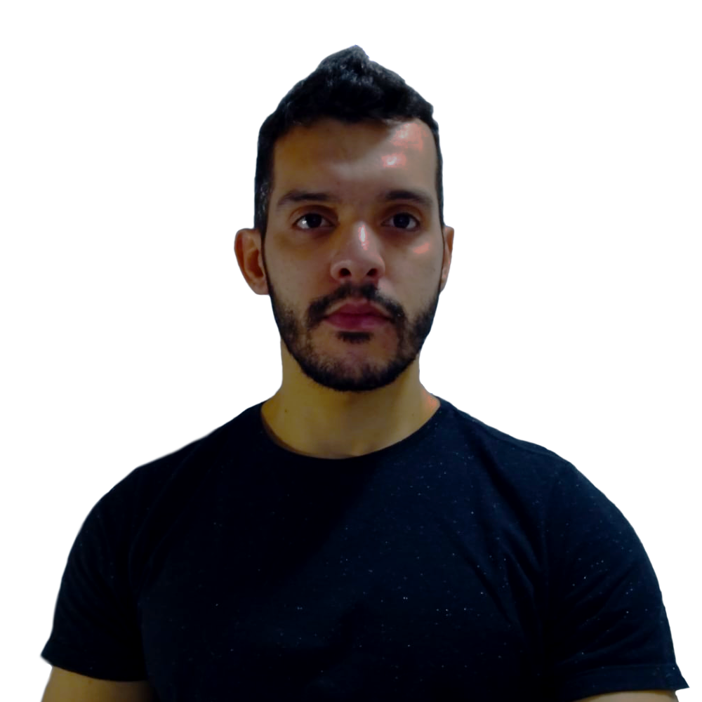

Edson Cristian Torres Marcolongo
28 anos, Masculino,Itaquari - Cariacica/ES
(27) 981 679 958
Edson_ctm@hotmail.com

Perfil Profissional
Me chamo Edson, sou estudante de Análise e Desenvolvimento de Sistemas e um futuro programador Front-End. Atualmente já possuo bons conhecimentos de HTML5 e CSS3, além de estar na parte intermediária do meu curso de JavaScript, tendo feito alguns pequenos projetos que podem ser vistos na minha página do Github. Sou graduado em Gestão Comercial e possuo bastante experiência de trabalho nas áreas administrativas.
Objetivos
Meu objetivo atual é iniciar na área de desenvolvimento, estagiando ou atuando como desenvolvedor júnior na parte de Front-End, principalmente. Quero alavancar o máximo possível meus conhecimentos na área de programação, utilizando sempre a tecnologia como resolvedor de problemas.Formação
Graduação - Análise e Desenvolvimento de Sistemas
Universidade Estácio de SáPeríodo: 2
Turno: EAD
Graduação Tecnológica - Gestão Comercial
CET-FAESAJulho de 2014 - Julho de 2016
Coeficiente de Rendimento: 9,09
Experiências Profissionais
Assistente de Projetos
Litoral Comercio Exterior - Vila Velha, ESMarço de 2019 - Abril de 2021
Comecei como assistente de Departamento Pessoal e fui movido posteriormente para a área de projetos. Entre minhas atividades, fazia o fluxograma das atividades de setores diversos, monitoramento de produtividade, elaboração estatística dos dados levantados e apresentação. Fui um dos responsáveis pela aquisição de mais de 1 milhão de reais em maquinários para aumento da produtividade do setor de Amostras da empresa.
Analista de Departamento Pessoal
Vila Vitória Mercantil do Brasil - Cariacica, ESOutubro de 2015 - Março de 2018
Comecei como vendedor telemarketing, passei por assistente financeiro e fui para a área de departamento pessoal. Minha demonstração de interesse e dedicação ao trabalho que me moveram por todas essas áreas. Nas minhas atividades, além do já esperado pela função, tratava diariamente com clientes internos e externos da empresa, além de fornecedores, fazia gestão de pessoas e conflitos, era responsável pela equipe de portaria, cozinha e limpeza, além de averiguação dos dados contábeis, que eram feitos por uma empresa externa.
Agente de Televendas
Autoglass - Vila Velha, ESFevereiro de 2013 - Abril de 2014
Atuava como vendedor telemarketing de peças automotivas, setor que era novidade da empresa na época.
Idiomas
Inglês
Nível de Conhecimento: AvançadoEspanhol
Nível de Conhecimento: BásicoHabilidades e Ferramentas
CSS3 e HTML5, JavaScript, Gimp, Word, Excel Avançado, Internet, Lógica de Programação, Powerpoint.
Certificações
Responsive Web Design
Março de 2022 - Não expira
Premiação
Fui homenageado pelo CRA-ES como "Formando Destaque Acadêmico", por minha motivação, bom senso, disciplina, demonstração de conhecimento e inteligência manifestados ao longo do curso.